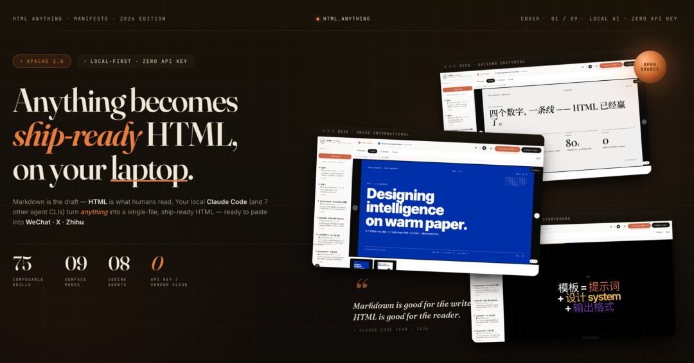
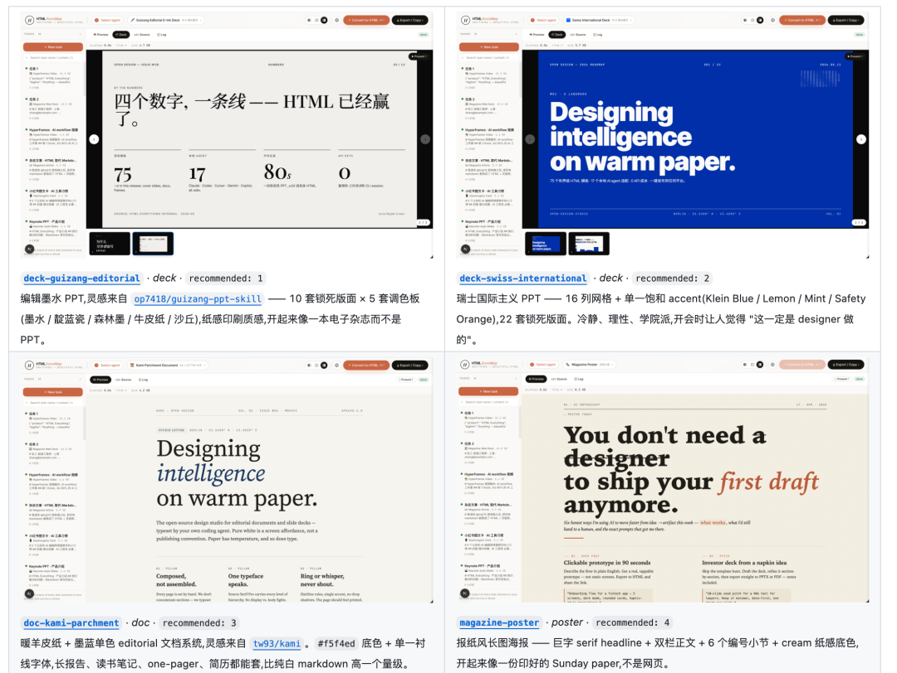

html-anything — Agent 时代的 HTML 编辑器
来源：微信公众号 归档日期：2026-05-17 抓取状态：成功 原文字符：3831｜配图：4 张
摘要速览
- （待补充）
核心内容
（待补充）
可执行启发
（待补充）
我的想法
（待补充）
核心定位
让本地 AI Agent（Claude Code / Codex / Gemini CLI 等）帮你把任何内容转成专业级 HTML，一键发布到多平台。
背景理念来自 Anthropic Claude Code 团队：内部文档不再写 Markdown，直接写 HTML——"Markdown 是写给写作者看的，HTML 才是给读者看的"。
核心特性
75 套 Skill 模板，9 种交付形态
| 形态 | 说明 |
|---|---|
| 杂志文章 | 暖色调羊皮纸风格（类 tw93/kami） |
| Keynote 演示 | 瑞士国际主义、贵藏编辑等 20 种专业模板 |
| 简历 | 专业级简历设计 |
| 海报 | 报纸风格大幅海报 |
| 小红书卡片 | 竖版卡片 |
| 推文卡片 | X/Twitter 适配 |
| Web 原型 | SaaS 落地页、仪表盘、数据报告 |
| 数据报告 | 专业数据分析报告 |
| Hyperframes 视频 | 可用于 Remotion/HeyGen 渲染的视频分镜 |
设计约束：CJK 优先字体栈、8px 基线网格、对比度 ≥ 4.5、必须使用真实数据。
自动识别 18 种 Code Agent
自动扫描 PATH 上的 Agent CLI（Claude Code、Cursor、Codex、Gemini CLI、Copilot CLI、OpenCode、Qwen、Aider 等），复用已登录会话，零 API Key，零边际成本。
一键多平台发布
| 平台 | 处理方式 |
|---|---|
| 微信公众号 | CSS 全部内联，粘贴即用 |
| X/微博/小红书 | 自动渲染 2× 高 DPI PNG，复制到剪贴板 |
| 知乎 | LaTeX 公式自动处理成图片占位符 |
| 下载 | 单文件 HTML 或高 DPI PNG |
其他
- 支持 11 种文件格式上传：.md/.txt/.csv/.tsv/.xlsx/.json/.sql/.yaml/.html/.png/.jpg
- SSE 流式渲染 Agent 输出
- 沙箱化 iframe 预览
- 代码量 15000 行，开源 3 天
推荐 Skill（Top 8）
- deck-guizang-editorial：贵藏编辑风格，杂志 × 电子墨水
- deck-swiss-international：瑞士国际主义，16 列网格
- doc-kami-parchment：暖羊皮纸编辑文档
- magazine-poster：报纸风格海报
- video-hyperframes：分镜脚本，可直接渲染视频
- frame-glitch-title：故障艺术标题帧
- vfx-text-cursor：文字光标特效
- frame-logo-outro：Logo 片尾帧
快速上手
git clone https://github.com/nexu-io/html-anything
cd html-anything
pnpm install
pnpm dev
# 访问 http://localhost:3000与我的关联
- 和 dragon-doc-style skill 的飞书发布流程互补：html-anything 面向多平台 HTML，dragon-doc-style 面向飞书
- 75 套 Skill 模板的设计思路可参考借鉴到自己的 Skill 体系
- "Agent 写代码，你专注内容"的理念和 AI Coding 工作流高度一致
原文沉淀
目录
- 什么是 html-anything
- 核心亮点
- 75 套 Skill 模板，覆盖 9 种交付形态
- 自动识别 18 种 Code Agent
- 一键发布到多平台
- 功能特性
- 快速上手
- 推荐 Skill
- 3. doc-kami-parchment：暖羊皮纸编辑文档，适合长文阅读
- 4. magazine-poster：报纸风格海报，超大衬线标题
- 6. frame-glitch-title：故障艺术标题帧，赛博朋克风格
- 7. vfx-text-cursor：文字光标特效，电影级开场
- 8. frame-logo-outro：Logo 片尾帧，产品展示或品牌影片
- 在看你就赞赞我！
前几天在 X 上刷到一条有趣的消息：Anthropic 的 Claude Code 团队宣布他们内部文档不再写 Markdown 了，直接写 HTML。
理由很简单也很戳人：Markdown 是写给写作者看的，HTML 才是给读者看的。
想想看确实是这么回事。我们辛辛苦苦写了一篇好文章，用 Markdown 排版完，发到微信公众号还要重新调整样式，截个图发微博又显得很丑，做个小红书卡片更是要重新设计一遍。
明明内容是一样的，却要在不同平台重复劳动，这种割裂感确实让人头疼。
而且写 HTML 这件事本身门槛就不低。要懂 CSS、要挑字体、要对齐网格、要做响应式——大部分人没这个耐心，设计师嫌麻烦，内容创作者根本不想碰。
但 HTML 确实是最终形态，它能给读者最好的阅读体验。
那有没有一种方式，能让我们不用写代码，也能得到专业级的 HTML 呢？答案就是今天要介绍的这个开源项目：html-anything。

什么是 html-anything
html-anything 是 nexu-io 团队最新发布的开源项目，这个团队前些时候还做出了 star 超过 40k 的 open-design。

html-anything 是一个专门为 Agent 时代打造的 HTML 编辑器。你不用再手写文档了，让你本地的 AI Agent 帮你把任何内容都转换成世界级设计水准的 HTML。
这个项目刚刚开源 3 天，代码量达到了 15000 行。支持 75 套 Skill 模板，9 种导出格式，并且能自动识别你电脑上安装的 18 种 Code Agent CLI，包括 Claude Code、Codex、OpenClaw、Qwen、Aider 等等。
顶栏一键切换，复用你已经登录的会话，零 API Key，零边际成本。
核心亮点
75 套 Skill 模板，覆盖 9 种交付形态
html-anything 内置了 75 套精心设计的 Skill 模板，每一套都有真实的 example.html 可以直接打开看效果。这些模板覆盖了 9 种不同的交付场景：
- • 杂志文章：暖色调羊皮纸风格，类似 tw93/kami 的阅读体验
- • Keynote 演示：包括瑞士国际主义风格、贵藏编辑风格等 20 种专业模板
- • 简历：专业级的简历设计
- • 海报：报纸风格的大幅海报
- • 小红书卡片：专为小红书设计的竖版卡片
- • 推文卡片：适合发 X/Twitter 的卡片设计
- • Web 原型：SaaS 落地页、仪表盘、数据报告等
- • 数据报告：专业的数据分析报告
- • Hyperframes 视频：可直接用于 Remotion 或 HeyGen 渲染的视频分镜
每个 Skill 都有严格的设计约束——CJK 优先字体栈、8px 基线网格、对比度 ≥ 4.5、必须使用真实数据等等，保证生成的每一个 HTML 都是专业级的。
自动识别 18 种 Code Agent
这是 html-anything 最聪明的地方。它会自动扫描你电脑 PATH 上的所有 Code Agent CLI，包括：
- • Claude Code
- • Cursor Agent
- • OpenAI Codex
- • Gemini CLI
- • GitHub Copilot CLI
- • OpenCode
- • Qwen Coder
- • Aider
- • ...
你不用配置任何 API Key，直接复用你已经通过 claude login、cursor login、gemini auth 等方式登录的会话。
你的现有订阅就能工作，边际成本是 $0。
一键发布到多平台
生成好的 HTML 可以一键导出：
- • 微信公众号：CSS 全部内联，粘贴进去直接用，不用重新调整格式
- • X/微博/小红书：自动渲染成 2× 高 DPI 的 PNG，直接复制到剪贴板
- • 知乎：LaTeX 公式自动处理成图片占位符
- • 下载保存：支持下载单文件 HTML 或高 DPI PNG
所有这些都通过一个按钮完成，生成出来就是最终可以发布的样子。
功能特性
- • 支持 11 种主流文件格式上传：.md、.txt、.csv、.tsv、.xlsx、.json、.sql、.yaml、.html、.png、.jpg
- • SSE 流式渲染：使用 Server-Sent Events 实时渲染 Agent 的输出
- • 沙箱化预览：用户生成的 HTML 运行在隔离的 iframe 沙箱中
快速上手
# 克隆项目
git clone https://github.com/nexu-io/html-anything
# 进入目录
cd html-anything
# 安装依赖
pnpm install
# 启动开发服务器
pnpm dev然后打开浏览器访问 http://localhost:3000 就可以开始用了。
确保你电脑上已经安装并登录了至少一个 Code Agent CLI，比如 Claude Code。
推荐 Skill
项目首页推荐了 8 个最受欢迎的 Skill，按推荐排序：
1. deck-guizang-editorial：贵藏编辑风格的演示，杂志 × 电子墨水风
2. deck-swiss-international：瑞士国际主义风格，16 列网格
3. doc-kami-parchment：暖羊皮纸编辑文档，适合长文阅读
4. magazine-poster：报纸风格海报，超大衬线标题
5. video-hyperframes：Hyperframes 分镜脚本，可直接渲染视频
6. frame-glitch-title：故障艺术标题帧，赛博朋克风格
7. vfx-text-cursor：文字光标特效，电影级开场
8. frame-logo-outro：Logo 片尾帧，产品展示或品牌影片
每个 Skill 都有完整的 example.html，可以在 GitHub 仓库里直接打开看效果。
写在最后
在 Agent 时代，我们确实不需要再手写文档了。
html-anything 把 Markdown 从最终输出降格为写作过程的中间状态，让 HTML 回归它本该有的位置——给人类阅读的最终形态。
这个项目的理念很清晰：你的 Agent 写代码，你专注内容。
75 套专业模板、零配置、一键多平台发布，这些加起来，确实能让内容创作的最后一公里变得无比丝滑。
如果你也厌倦了在不同平台反复调整格式，如果你想让你的内容以最好的样子呈现给读者，不妨试试 html-anything。
GitHub：https://github.com/nexu-io/html-anything
如果本文对您有帮助，也请帮忙点个 赞👍 + 在看 哈！❤️
在看你就赞赞我！

归属：[[02-输入/按主题/工具与技术/_index|工具与技术]]